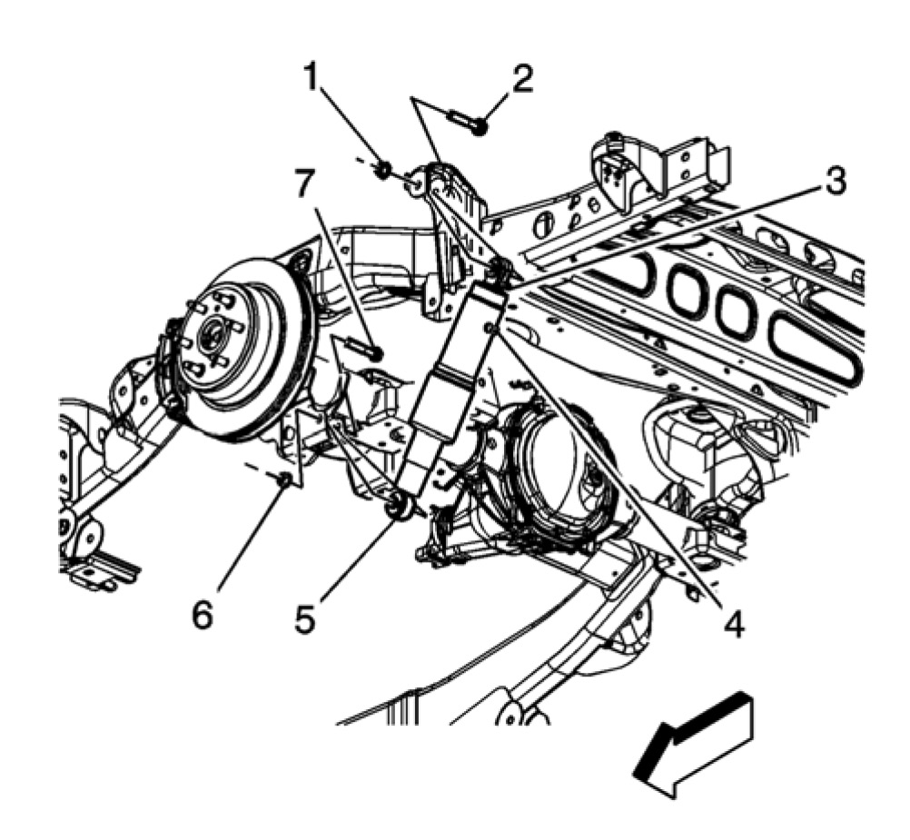

Shock Absorber Replacement (1500 Series)
Shock Absorber Replacement (1500)
Removal Procedure
1. Raise and support the vehicle.
2. Support the rear axle.
3. Disconnect the electronic suspension control connector (3), if equipped.
4. If the vehicle is equipped with air leveling, perform the following:
- Turn the ignition On, with the engine off.
- Install a scan tool.
- With the scan tool, exhaust the air from the system for at least 60 seconds.
Important: There will be a minimal amount still in the air in the air lines.
5. Disconnect the air line, if equipped (4).
6. Remove the upper shock absorber nut (1) and the bolt (2).
7. Remove the lower shock absorber nut (6) and the bolt (7).
8. Remove the shock absorber (5).
Installation Procedure

1. Install the shock absorber (5).
2. Install the upper shock absorber nut (1) and the bolt (2).
Notice: Use the correct fastener in the correct location. Replacement fasteners must be the correct part number for that application. Fasteners requiring replacement or fasteners requiring the use of thread locking compound or sealant are identified in the service procedure. Do not use paints, lubricants, or corrosion inhibitors on fasteners or fastener joint surfaces unless specified. These coatings affect fastener torque and joint clamping force and may damage the fastener. Use the correct tightening sequence and specifications when installing fasteners in order to avoid damage to parts and systems.
3. Install the lower shock absorber nut (6) and bolt (7).
Tighten
Tighten the upper and lower shock absorber nuts (1) and (5) to 115 Nm (85 lb ft).
4. Reconnect the electronic suspension control connector, if equipped (3).
5. Reconnect the air line (4), if equipped.
6. Remove the support from the rear axle.
7. Lower the vehicle.
8. If the vehicle is equipped with air leveling, perform the following:
- Turn the ignition ON, with the engine OFF.
- Install a scan tool.
- With the scan tool, operate the air compressor for 30 seconds or until rear of the vehicle begins to rise.
- Remove the scan tool.
- Cycle the ignition OFF, then back ON, with the engine ON to allow the air suspension system to regain the desired rear suspension position.